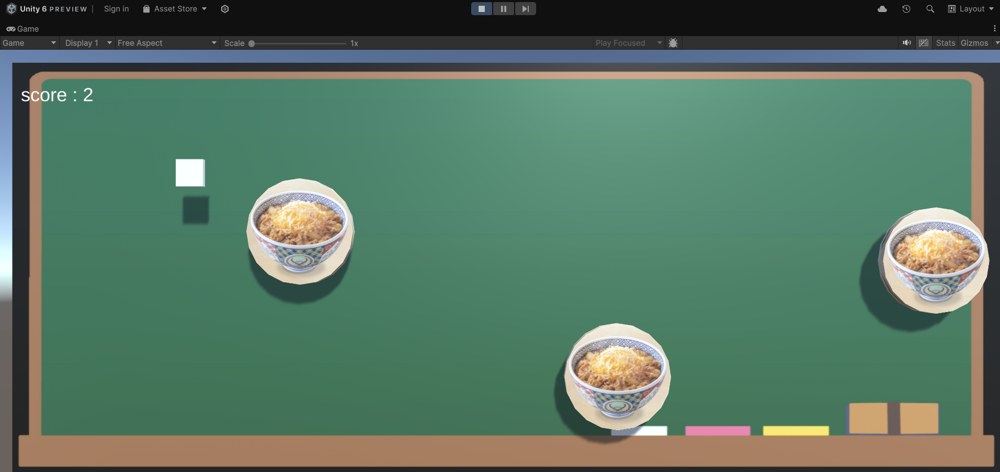

自己紹介
大阪公立大学工業高等専門学校 知能情報コース 2年 川原斗星
制作物
cheese mizove
センサー搭載の拳銃型コントローラーによるガンシューティングゲーム。高専祭にて展示。


VS NPC RUSSIANROULETTE
pythonで製作した、テキストべースのゲーム。
詳しい内容: https://colab.research.google.com/drive/1-0tEpFV312RdSrIT_PzVWeAP67riZPNZ
infection_simulation 製作期間2024年12月～2025年1月
このシミュレーションでは、ネットワーク上での感染症の感染拡大をSIRモデルを用いてモデル化します。
SIRモデルの概要
- S（感受性のある人）: 感染していないが、感染する可能性のある状態。
- I（感染者）: 現在病気で、他の人に感染を広げる可能性がある状態。
- R（回復者）: 感染から回復し免疫を持つか、感染を広げなくなった状態。
シミュレーションの流れ
- ネットワークの生成: エルデシュ＝レーニィモデルでランダムな接続のネットワークを作成。
- 初期状態の設定: 感受性のあるノードから一部を感染者に設定。
- シミュレーションの進行: 感染者が回復したり、隣接ノードに感染を広げる過程を繰り返す。
- 結果の可視化: 各ステップでの状態を色で示したグラフを生成。
GUIの構成と操作
ユーザーは5つの重要なパラメータ（ノード数、初期感染者の割合、感染の確率、回復の確率、ステップ数）を設定し、「シミュレーション開始」ボタンを押すことでシミュレーションを開始できます。 各ステップで結果が視覚的に表示されます。